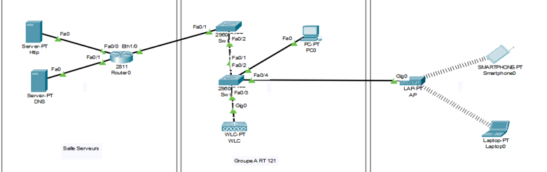

UE x.2 – Connecter les entreprises et les usagers
Cette UE nous a permis de maîtriser les dispositifs de transmission filaires et sans-fil, de mesurer et caractériser les signaux, puis d’intégrer ces liaisons dans des architectures d’accès fiables – un ensemble aligné sur les composantes essentielles CE2.01 à CE2.05.
SAÉ1.03 – Découvrir un dispositif de transmission
Compétence : Dispositifs de transmission (Wi-Fi)
Description
Étude du câblage, des mesures de puissance PoE, réalisation de heatmaps Wi-Fi, mesures de débit et simulation réseau sous Packet Tracer.
Preuves & traces
- Câblage RJ-45 S/FTP – norme TIA-568B.

- Mesure PoE avec switch Cisco 2960-24PC-L.

- Heatmaps 2.4Â GHz & 5Â GHz.
- Mesures de débit (SpeedTest, nPerf, JPerf).

- Simulation Packet Tracer : serveur DNS, Web, DHCP, AP Wi-Fi.

Conclusion
Acquis : câblage structuré, mesure PoE, cartographie Wi-Fi, simulation réseau en équipe.
SAÉ2.02 – Mesurer et caractériser un signal ou un système
Compétence : Métrologie des signaux
Description
Acquisition de signaux audio avec Arduino UNO (Tinkercad), analyse FFT pour reconnaissance de notes et transmission des données.
Preuves & traces
- Simulation Tinkercad – schéma câblage.
Conclusion
Acquis : mesure analogique, FFT embarquée et travail collaboratif pour intégration matériel/traitement.
SAÉ3.01 – Mettre en œuvre un système de transmission
Compétence : Systèmes de transmission (CE2.01 à CE2.05)
Description
Conception et prototypage d’un système de transmission de données via prise connectée, utilisant Arduino pour la captation et Python pour le traitement et l’envoi vers une interface de supervision, avec connexion SSH sécurisée.
Preuves & traces
Conclusion
Renforcement des compétences en électronique embarquée, programmation embarquée et transmission de données, avec rigueur d’analyse et tests de performance.